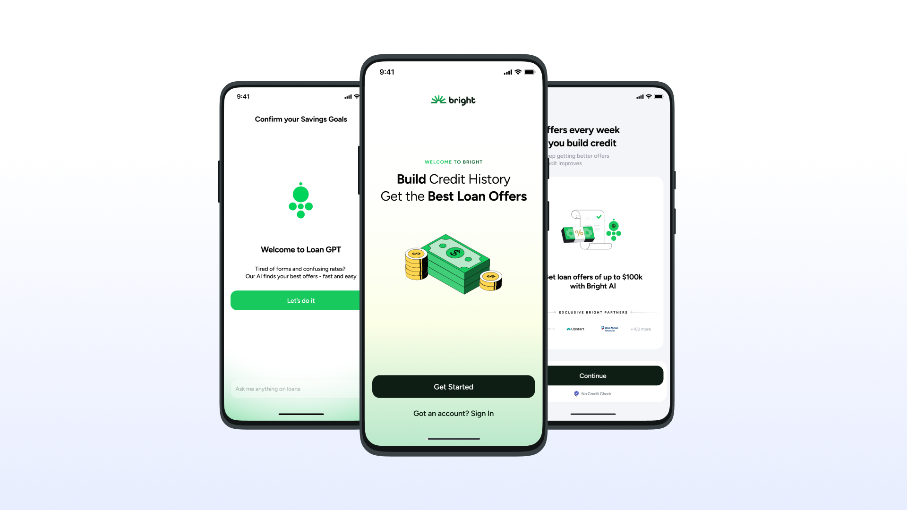
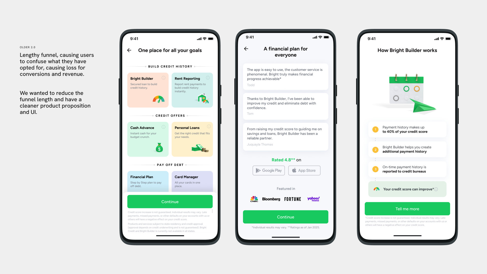
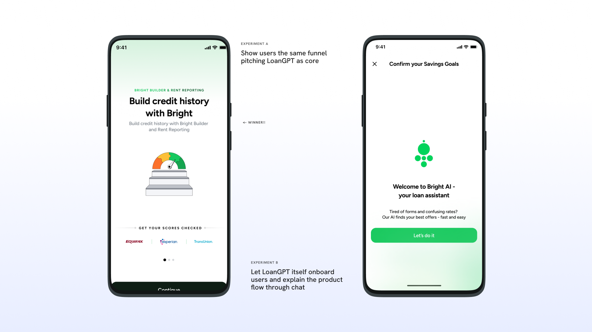
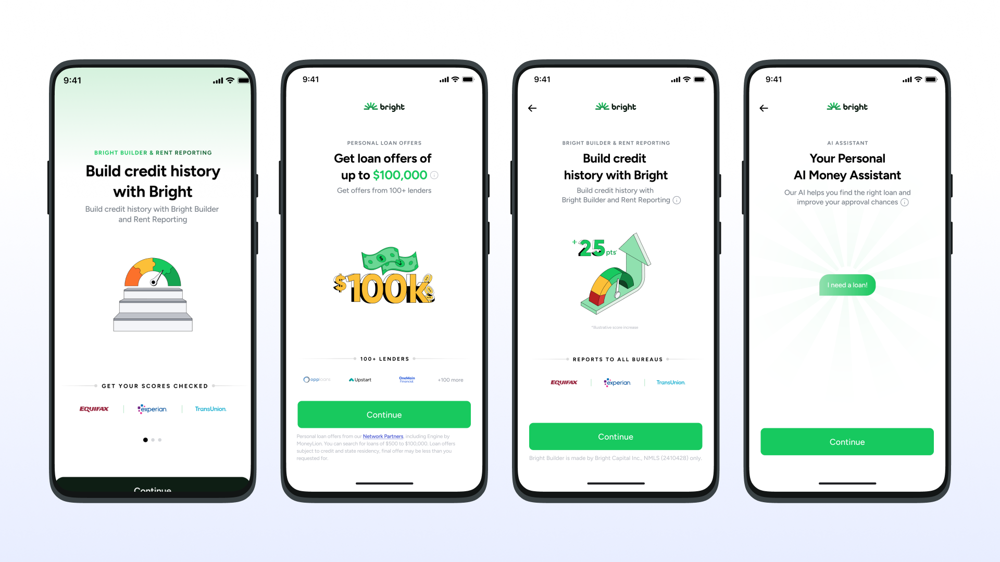
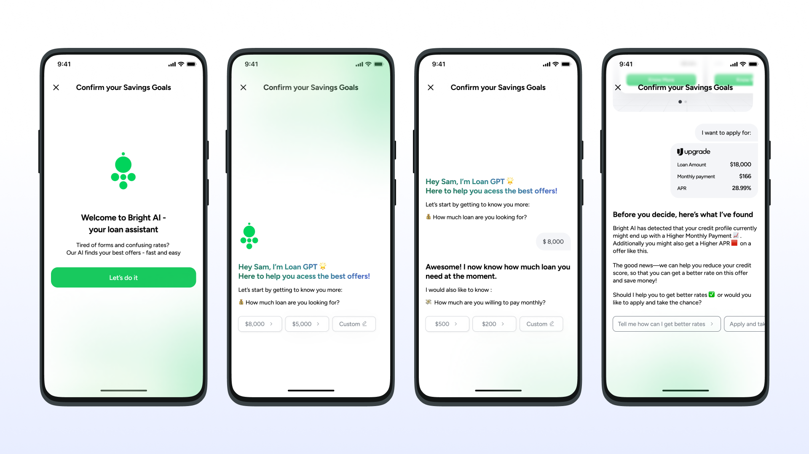
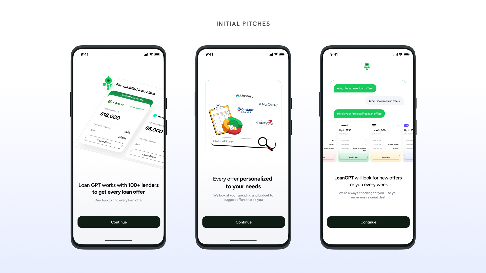
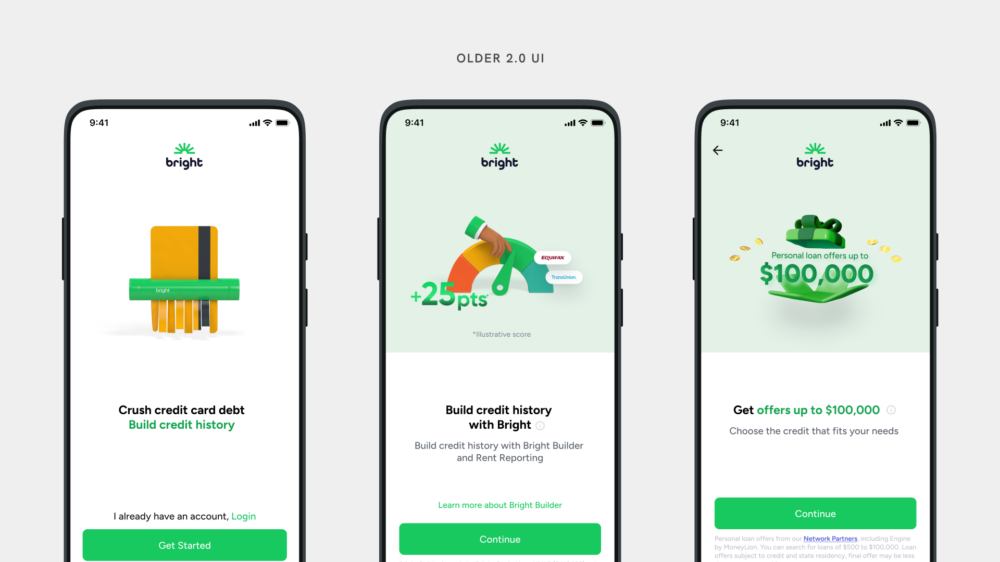
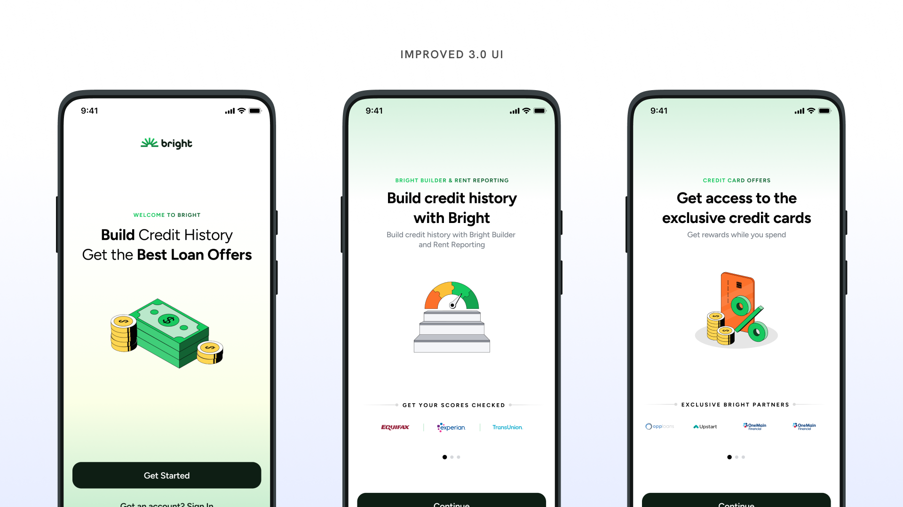
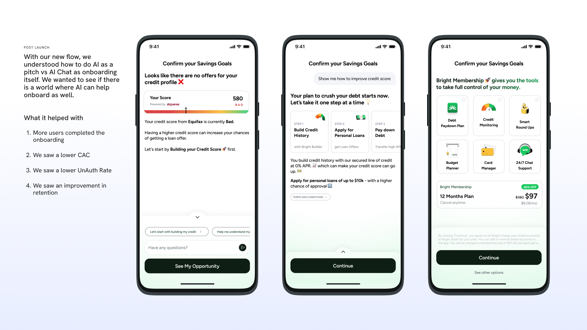

Funnel Revamp
Rebuilding a funnel that had not moved since 2022. Conversion went from 40% to 45% and CPA fell 10%, on the funnel every new user passes through.

Overview
A four-phase rebuild where removing things moved the number.
Problem
The onboarding funnel is how every user arrives, and it had not been rebuilt since 2022. Four years of product had been bolted onto it.
My part
Supporting designer to the two design leads. I owned the narrative, the post-enroll screens and copy, the LoanGPT surfaces in the funnel, and reconciliation against the design source of truth.
Result
Conversion 40% to 45%, CPA down 10%, about $200K per month saved, with no downstream drop.
Context
The front door to everything Bright does.
The company is a US credit-building fintech app for people with bad credit and expensive debt. It builds credit through Bright Builder, rent reporting and bill reporting, and routes users to loan offers through LoanGPT, our lender recommendation product.
The onboarding funnel is how every single user arrives. Nobody uses Bright without passing through it first. It had not been rebuilt since 2022.
I supported the two design leads across the revamp. My slice: narrative curation, which meant deciding what each screen was allowed to say and why. I also owned the post-enroll screens and copy through to production, the LoanGPT surfaces inside the funnel, and reconciling the funnel against the design source of truth.
Problem
The problem was accumulation, not a bad design.
Four years of product had been bolted onto a structure built before Rent, Sub Management and Affiliates existed. The funnel still argued like a 2022 product.
- Two funnels in parallelCredit Builder and Debt Manager, each with its own pitch, splitting design effort and diluting the argument.
- Heavy enrolmentCredit agreement, AutoPay and account opening consents all sat before the user ever saw a price.
- A repeating narrativeUser interviews kept flagging the same thing: the same promise said three different ways.
- Leaking at monetisationToo many users who started never reached the screen where they first see a price.
- CPA too highFor a plan that needed it lower.

Older 2.0 UI: lengthy funnel, diluted pitch.
Research
Nine competitors, and one finding that decided the structure.
We tore down Albert, Cleo, MoneyLion, Acorns, Brigit, Self, Kikoff, Dave and Rocket Money. Not a survey. We were looking for permission to remove things.
Goals
Two lists that had to survive each other.
Phase 1 was explicit: revamp the experience without damaging any key business metric. Change everything, as long as nothing gets worse.
Process
Bring down the number of repeating screens.
The split let us ask a narrower question of every section: what is this part allowed to say, and what is it not allowed to repeat. Most of the work was that question, answered screen by screen.
- Pre-sellWhat the funnel promises
- PIIWhat we ask for
- Product funnelWhat each product argues
- MonetisationWhere the price appears
- Post-enroll add-onsWhat comes after paying
Three structural bets came out of it.
Bet 1
How many funnels.
Bet 2
What the pre-sell says.

Experiment A vs B: LoanGPT as onboarder won.
Bet 3
Subtraction.
Solution
LoanGPT became the destination and the reason to pay.
On 1 December 2025 the PM rewrote the post-enroll narrative in one line: remove Credit Builder from the pitch and make a bigger deal of LoanGPT as the tool that gets you the best loans.
That changed what the funnel was selling. The promise became three things in order: build your score, get the best loan offers with LoanGPT, save money.
The message we landed on for the loan proposition: Bright combines loan offers from 100+ lenders and recommends the best one for you. The number tested well. The recommendation framing positioned Bright as adding intelligence rather than acting as a directory.

New bullet funnel: four screens, one argument.

LoanGPT chat: collects intent, surfaces offer, flags risk.
The Bullet Funnel ran alongside.
While the main funnel was being rebuilt, a shorter variant ran in parallel. A $14 plan against the existing $39-and-above flow, on separate landing pages, aimed at acquiring lower AOV users at a lower CPA.
Internally it became the name for the whole new funnel. Every acquisition campaign now carries the prefix.

Initial pitch screens: lender breadth, personalization, continuous discovery.

Old 2.0: three messages, none of them the same.

Improved 3.0: one entry, two promises.
Outcome
What it moved.
Conversion, CPA and the monthly saving are in the numbers at the top. Two more figures came with them.
All figures were measured over one month. The CPA saving came with no negative downstream impact. The Phase 1 constraint held. Nothing we removed cost us anything.
One caveat worth stating plainly. These two sets of numbers share a cause. The funnel rebuild is what put LoanGPT in front of users, so some portion of the engagement lift is funnel exposure rather than the LoanGPT surfaces themselves. No control was run that holds exposure constant. They are one result reported two ways, not two independent wins.

Post-launch: LoanGPT as onboarding surface, debt plan, membership pitch.
Takeaways
What I took from it.
- Removing moved the number more than adding did. The three changes that mattered most were all subtractions: one funnel instead of two, consents moved past enrolment, repetition stripped from the pitch. We added very little.
- Competitor research is most useful as permission. Nine teardowns gave us nothing to copy. They told us which pieces of friction we were carrying out of habit rather than necessity.
- Order is a design decision with a revenue number attached. Putting Affiliates last was not a layout call. It was the recognition that users physically leave the app during that journey, which makes everything after it worthless.
- A funnel is an argument delivered in sequence. Most of my work was not drawing screens. It was deciding what each screen was allowed to say, and making sure it did not say something an earlier screen had already said.